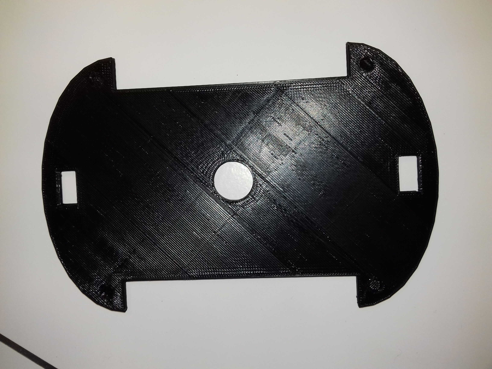
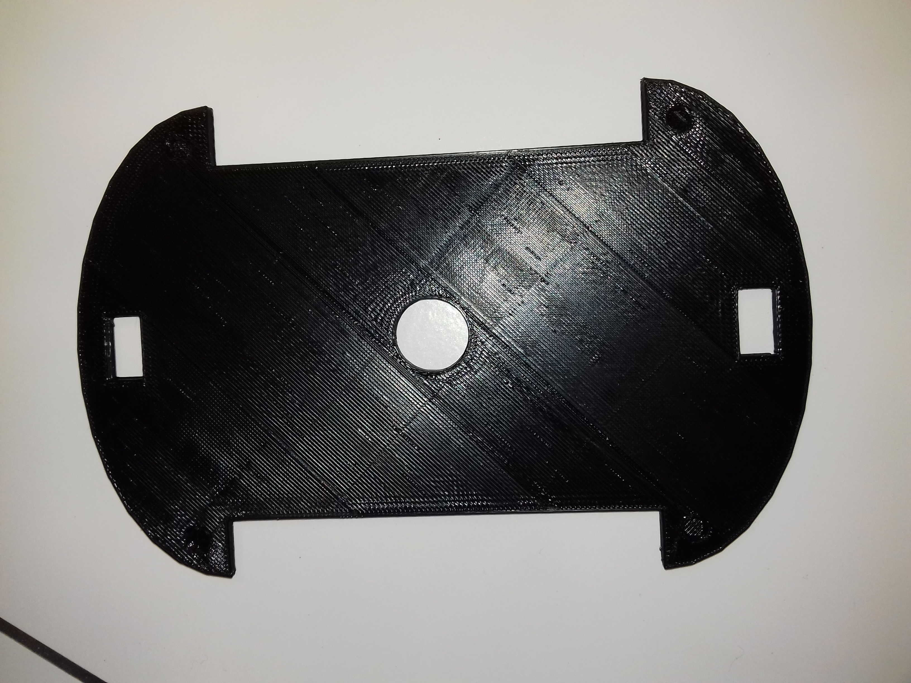

Le codage
Le codage nous permet dans ce projet de pouvoir commander la maquette, et plus précisement les moteurs. A l'aide de ce codage, on peut ainsi décider
à quel moment les moteurs vont s'allumer ou s'éteindre. Tout cela s'effectue à travers un langage de programmation, le langage ARDUINO.
Un programme Arduino comporte trois parties :
- la partie déclaration des variables (optionnelle)
- la partie initialisation et configuration des entrées/sorties : la fonction setup ()
- la partie principale qui s'exécute en boucle : la fonction loop ()
Dans chaque partie d'un programme sont utilisées différentes instructions issues de la syntaxe du langage Arduino.
Lorsque du code est écrit dans l'interface de programmation, certains mots apparaissent en différentes couleurs qui clarifient le statut des différents éléments :
- En orange, apparaissent les mots-clés reconnus par le langage Arduino comme des fonctions existantes. Lorsqu'on sélectionne un mot coloré en orange et qu'on effectue un clic avec le bouton droit de la souris, l'on a la possibilité de choisir « Find in reference » : cette commande ouvre directement la documentation de la fonction sélectionnée.
- En bleu, apparaissent les mots-clés reconnus par le langage Arduino comme des constantes.
- En gris, apparaissent les commentaires qui ne seront pas exécutés dans le programme. Il est utile de bien commenter son code pour s'y retrouver facilement ou pour le transmettre à d'autres personnes. L'on peut déclarer un commentaire de deux manières différentes :
- dans une ligne de code, tout ce qui se trouve après « // » sera un commentaire.
- l'on peut encadrer des commentaires sur plusieurs lignes entre « /* » et « */ ».
Ce codage s'effectue bien evidemment sur un ordinateur, puis est transféré à la carte programmable, qui va le stocker. Ce codage sera activé à l'aide d'une télécommande infrarouge. Carte Arduino


 
